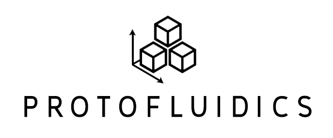

Upgrade
Save as JSON
Upload JSON File
Pillar
Mixer
Channel
Collection Region
Rectangular Region
Grid Size (microns)
Collection Region Size
Channel Width
Mixer Wavelength
Mixer Amplitude
Mixer Width
Pillar Width